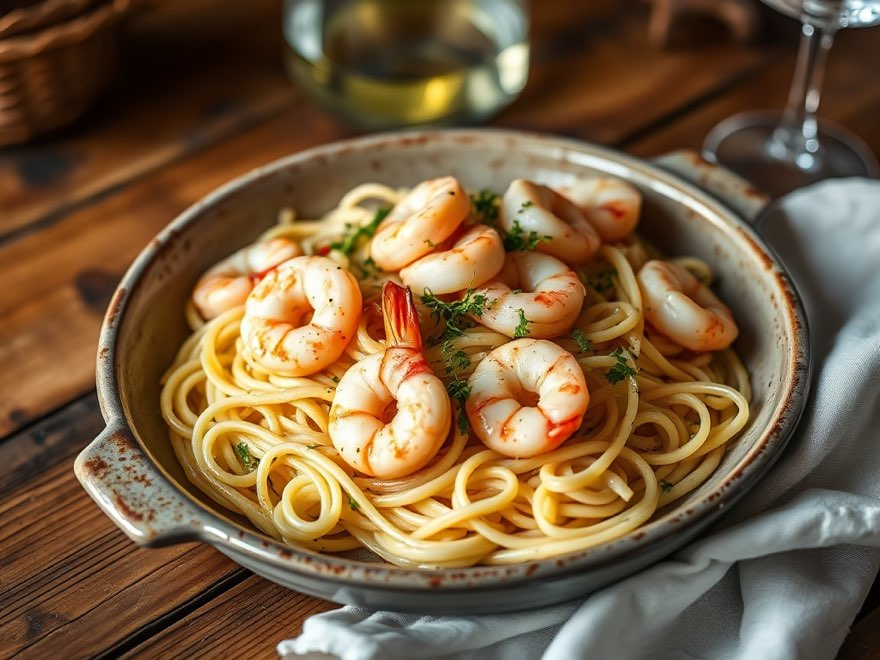

Shrimp Scampi Linguine
Plump shrimp in garlicky lemon-butter sauce with white wine, tossed with linguine.

Ingredients
- 12 oz linguine
- 1 lb shrimp, peeled
- 4 tbsp unsalted butter
- + 6 more
See the full recipe
Every ingredient and all 4 steps are in PantryPilot. Create a free account to see them, scale the servings, plan it into your week and add it to your shopping list.
Get the full recipe, free